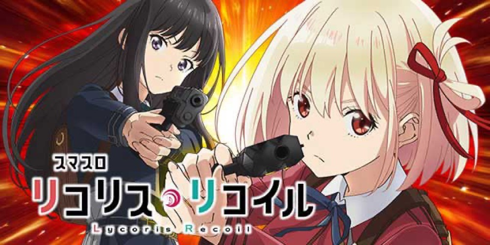

スマスロ リコリス・リコイル
20Gの初回RUSHを突破し、50G＋ST10Gから1000ptと上位を目指す。
- 導入
- 2026年9月
- メーカー
- サミー
- 分類
- パチスロ
主要スペック
約100枚のプロローグ後、ボーナス期待度約60%のリコリスラッシュ20へ。突破後は前半50G＋後半ST10G、4種類のボーナス、1000pt到達、10G・約70%の上位CZ、リコリスラッシュWまでを実機順に体験できます。
- リコリスラッシュ20は20G＋α・BONUS期待度約60%
- リコリスラッシュ50は前半50G＋α・後半ST10G
- リコイル オブ リコリスは10G・成功期待度約70%
スマスロ リコリス・リコイルの見どころと計算条件
約100枚のプロローグ後、ボーナス期待度約60%のリコリスラッシュ20へ。突破後は前半50G＋後半ST10G、4種類のボーナス、1000pt到達、10G・約70%の上位CZ、リコリスラッシュWまでを実機順に体験できます。
スマスロ リコリコを数字で早分かり
RUSH20、前半50G、後半ST10G、4種類BONUS、1000pt、上位CZ、上位RUSHを個別に記録します。
30秒で分かるスマスロ リコリコ
20Gの初回RUSHでBONUSを引いて50G＋ST10Gへ昇格し、BONUS中の1000ptから約70%の上位CZを目指す高純増BONUS連打型です。
こんな遊び方に向いている
- 20Gから50G＋STへ育てる流れをPUSHで見たい
- 4種類のBONUSとポイント獲得を比べたい
- 1000ptから上位CZ・上位ATを狙いたい
遊ぶ前に確認したいこと
- RUSHゲーム数・BONUS確率・主要出玉は公開値
- BONUS種類比率・ポイント量は代表値
- 旧6区間の汎用STフローは廃止
通常時と2種類のCZ
通常時は規定ゲーム数、スタンプカード、小役変換からCZを目指します。CZはオポジットバトルと、AT期待度約83%のファーストリコリスです。
設定別CZ・AT初当りは公開値を使用し、通常時の全モード・小役変換・天井は初当り確率へまとめます。
プロローグとリコリスラッシュ20
AT初当り後は約100枚のプロローグを消化し、千束ラッシュまたはたきなラッシュへ。千束はチェリー、たきなはスイカの才能レベル2が常時点灯します。
初回は20G＋αで、BONUS期待度は約60%、BONUS確率は約1/18。BONUS当選でリコリスラッシュ50へ昇格します。
リコリスラッシュ50と4種類のBONUS
前半は50G＋α・BONUS約1/18。後半は10GのSTでBONUS約1/12、当選するたびに10Gを再セットします。ゲーム数上乗せ型ではなく、残りGを減らしながらBONUSを重ねるゲーム性です。
BONUSは100枚、200枚以上、約300枚、平均約385枚の4種類。PUSHまで種類を伏せ、払い出し枚数と獲得ポイントを別々に表示します。
1000pt・上位CZ・リコリスラッシュW
BONUS中に100pt到達ごとの報酬を狙い、1000ptで上位CZの権利を獲得。リコイル オブ リコリスは10G・成功期待度約70%で、最後のPUSHで上位当落を開きます。
上位ATは前半50G＋α・後半ST10G。チェリーとスイカが常時才能レベル2、BONUSはW揃い以上となり、1000pt到達時は上位CZを経由せず再セットします。
レジェンダリーリコリスと簡略化する範囲
上位AT突入時の一部やロングフリーズでは、7G＋α・平均上乗せ約1000枚のレジェンダリーリコリスへ進みます。獲得枚数をPUSHで開き、上位ATへ加算します。
BONUS種類の詳細振り分け、ポイント獲得量、才能レベルの変化、レジェンダリー突入率など非公表部分は、公開された平均値とゲーム性を崩さない体験用代表値です。
固定条件と収支
- 約31.8G/50枚・1,000円46枚貸し・5.2枚交換で固定
- 設定1〜6から均等抽選
- RUSH残りG・BONUS枚数・ポイントを別表示
- 19,000枚到達時はコンプリート表示
平均Gと投資目安の計算
掲載するリコリスラッシュ初当り約1/328.8は設定1基準です。当サイトでは50枚あたり31.8G、1,000円46枚貸しの固定条件から、設定1基準の平均投資目安を約11,200円と計算します。
シミュレーターでは設定1〜6を均等抽選します。設定1〜6で公開されている初当り値を個別に使います。公開されていない特化ゾーン・上位到達率の設定差は加えません。 換金は5.2枚交換で固定し、結果とランキングに設定を表示します。
シミュレーション結果の見方
当るまでCZ（オポジットバトル／ファーストリコリス）・リコリスラッシュまでのゲーム数
設定設定1・2・3・4・5・6から抽選された今回の設定
上位到達リコイル オブ リコリスとリコリスラッシュWへの到達
最終収支差枚と5.2枚交換の収支目安
結果は自動で「マイ記録」に保存され、同じ機種を何回試したか、最高収支、勝率をあとから確認できます。
簡易シミュレーターについて
CZ（オポジットバトル／ファーストリコリス）・リコリスラッシュ・リコリスラッシュWの流れを固定条件で体験できます。JavaScriptを有効にすると、この位置にシミュレーター、演出、マイ記録、機種別ランキングが表示されます。
結果は娯楽・確率理解のための参考表示です。金銭的価値や交換価値はなく、実際の勝敗や収支を保証しません。18歳未満の方の利用はお控えください。
スマスロ リコリコのよくある質問
スマスロ リコリコはどんな台？
約100枚のプロローグ後、ボーナス期待度約60%のリコリスラッシュ20へ。 リコリスラッシュ20は20G＋α・BONUS期待度約60%が主な確認ポイントです。
スマスロ リコリコの平均投資目安は？
設定1基準のリコリスラッシュ初当り約1/328.8と、50枚あたり31.8G・46枚貸しの固定条件から、平均11,200円を目安として表示します。実際の設定や遊技状況で結果は変わります。
設定とゲームの流れはどう抽選する？
開始時に設定1・2・3・4・5・6から1つを均等抽選し、CZ（オポジットバトル／ファーストリコリス）、リコリスラッシュ、リコイル オブ リコリス、リコリスラッシュWの順で到達を判定します。設定は最終結果とランキングに表示します。
収支はどう計算する？
1,000円46枚貸し・5.2枚交換の固定条件で投資、換金、収支目安を計算します。実店舗の再プレイ、持ちメダル、端数処理は含みません。